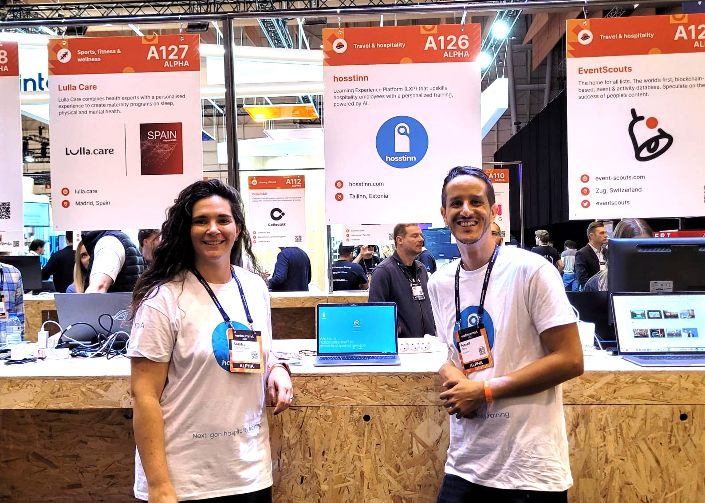

The storyLa historia
Built it, learned from it, now I install it. Lo construí, aprendí de ello y ahora lo instalo.

Founder photo, Hosstinn era.Foto de fundador, época Hosstinn.I built itLo construí
I co-founded Hosstinn, an AI SaaS platform, and led it as CEO and CPO. From an idea with no product, no team, and no process, to a live platform: 15,000+ active users, 80%+ retention, 6x engagement growth, €200K raised, and two industry awards.
Cofundé Hosstinn, una plataforma SaaS con IA, y la lideré como CEO y CPO. De una idea sin producto, sin equipo y sin procesos, a una plataforma en producción: más de 15.000 usuarios activos, retención superior al 80%, crecimiento de engagement 6x, 200K euros levantados y dos premios del sector.
I learned what actually worksAprendí lo que funciona de verdad
What carried us was never heroics. It was clarity about what mattered, decisions written down the day they were made, and a weekly rhythm the whole team could trust.
So I turned everything that worked into a system: diagnostic frameworks, prioritization lenses, a decision log, an operating rhythm. Written down, repeatable, and independent of any one person.
Lo que nos sostuvo nunca fueron las heroicidades. Fue la claridad sobre lo que importaba, las decisiones escritas el mismo día que se tomaban y un ritmo semanal en el que todo el equipo podía confiar.
Así que convertí todo lo que funcionó en un sistema: frameworks de diagnóstico, lentes de priorización, un registro de decisiones, un ritmo operativo. Escrito, repetible e independiente de cualquier persona.
Now I install it for foundersAhora lo instalo para fundadores
Today I work with a small number of early-stage startups as a fractional product lead. I bring the strategy, the prioritization, and the execution system, then make them stick without me.
Hoy trabajo con un número reducido de startups early-stage como líder de producto fraccional. Aporto la estrategia, la priorización y el sistema de ejecución, y luego hago que perduren sin mí.